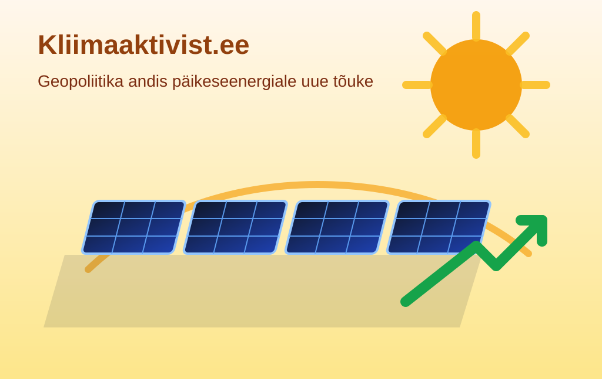

Geopoliitika andis päikeseenergiale uue tõuke

BBC kirjutab, et suured konfliktid on toonud päikeseenergiale uue hoo: ettevõtted ei räägi enam ainult rohelisest südametunnistusest, vaid väga konkreetselt elektriarvest. Kui hind hüppab ja tarnerisk kasvab, muutub päike äkitselt täiesti mõistlikuks äripartneriks.
Ühe Briti päikeseenergiafirma müük kasvas pärast Iraani sõja algust 65 protsenti ning Ühendkuningriigis on päikesevõimsuse lisandumine aastaga kasvanud 11 protsenti. Numatic, see sama Henry tolmuimejate tootja, pani Chardi tehasesse 1,5 miljoni naela eest paneele ja katuse taha koguni terve väljaku. Tolmuimejad imevad küll hästi, aga elektriraha neelavad nad veel paremini.
Ettevõtte finantsjuhi sõnul teenib investeering end tagasi vähem kui nelja aastaga. See on kliimajutt, mis kõlab ühtaegu roheliselt ja väga igavalt — ehk just seetõttu töötabki. Kui päike suudab tootmisettevõtte arvet kergendada, siis geopoliitika teeb vähemalt üht asja õigesti.
Loe algallikat: BBC News – "Why global conflicts have sparked a major rise in solar power"
selle artikli sisu sõnastatud AI poolt: (mudel gpt-5.4-mini)